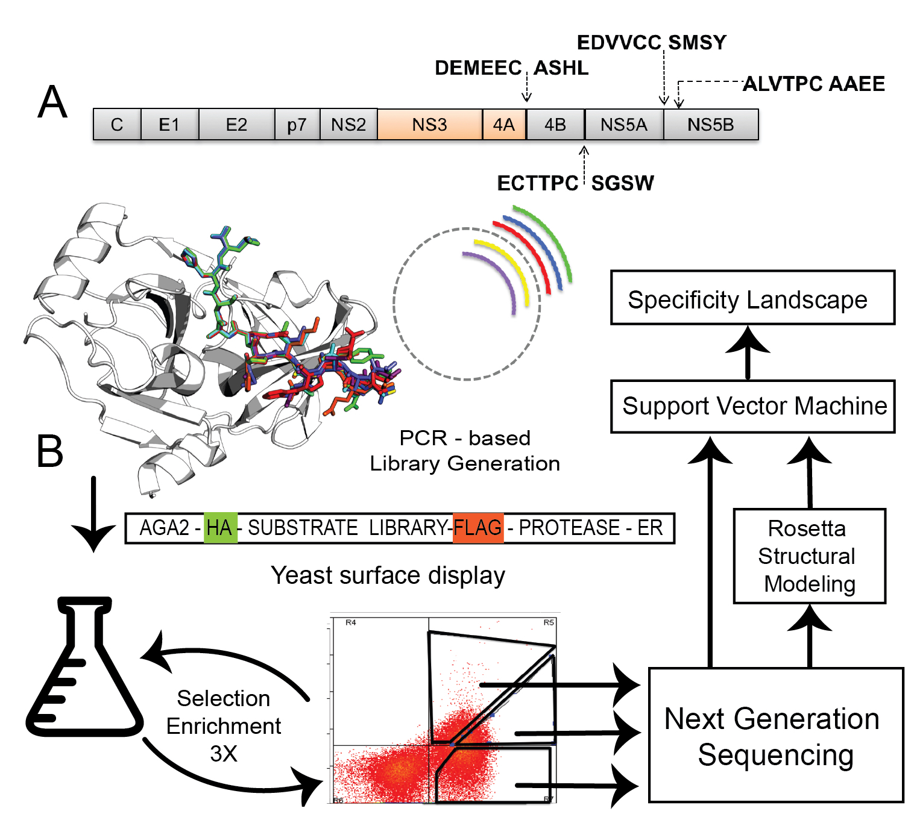
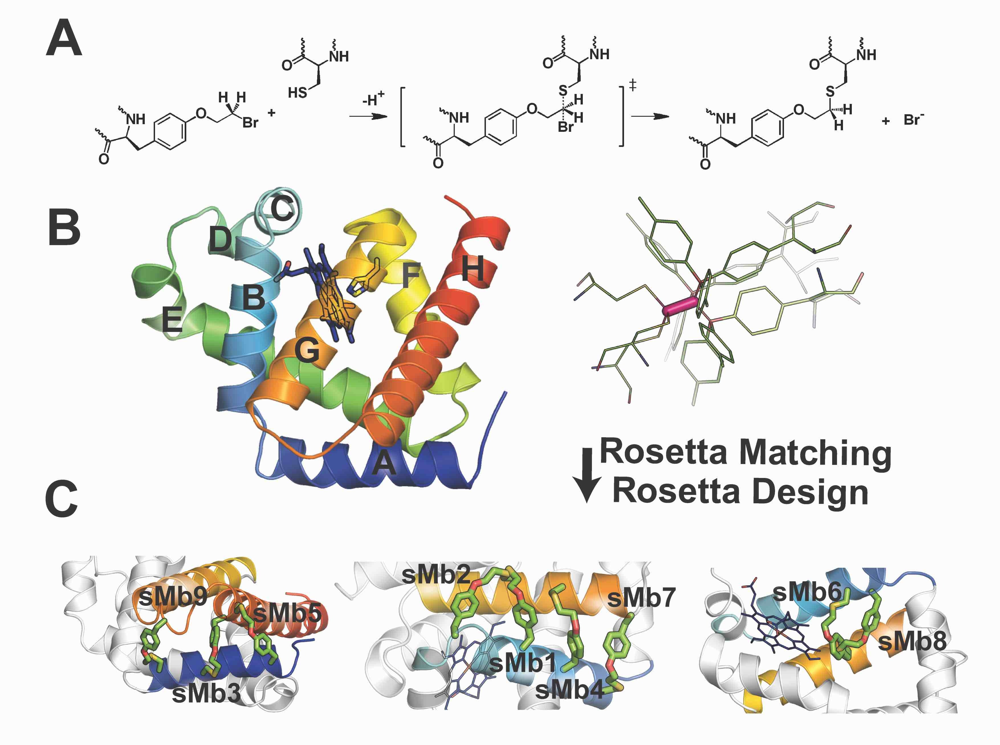
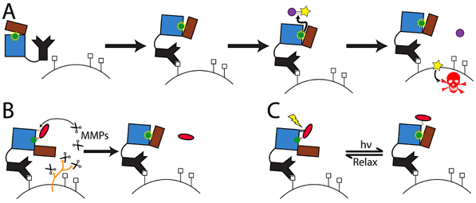
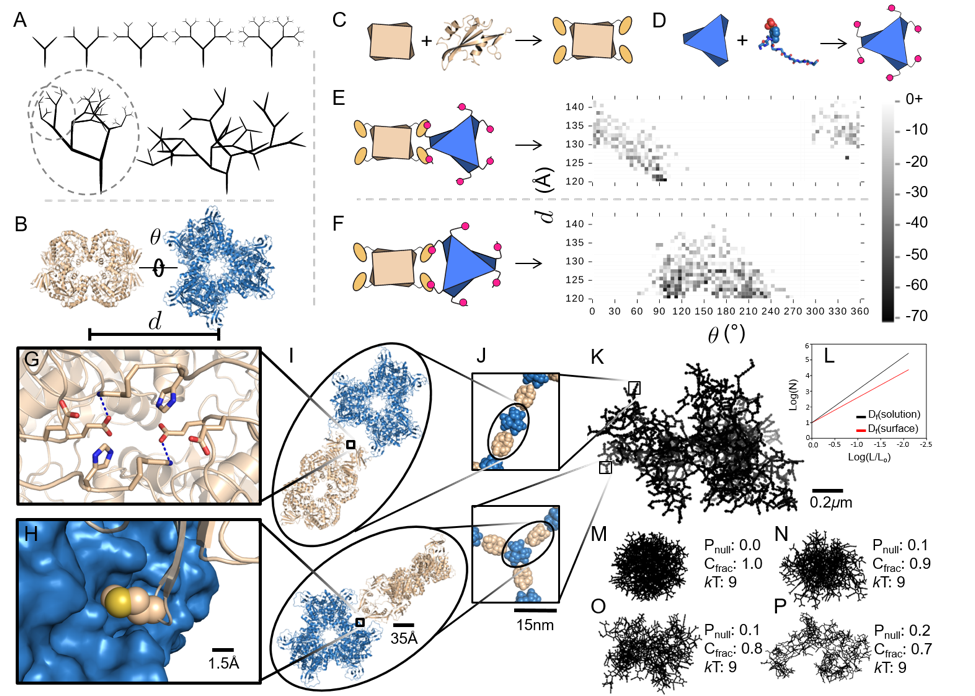
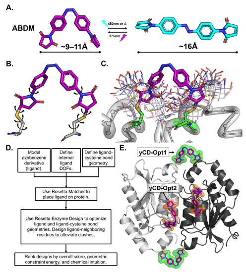

Overview
We design new and optimize existing enzymes using computational and experimental tools. Ultimately, we are interested in understanding the fundamental biophysical bases of enzyme function and use this knowledge to engineer enzymes for applications including biodegradation of pollutants and toxins, stabilization of enzymes for harsh environments, extension of enzymatic chemistries beyond what biology has explored, and the design of enzymatic catalytic therapeutics.
Designing Enzyme Selectivity

Figure adapted from Lu, Lubin, Sarma et al., Proc. Natl. Acad. Sci. USA 120:e2303590120 (2023).
Enzymes achieve their remarkable rate accelerations in part by being highly selective for a particular substrate or stereochemical outcome. We are interested in reshaping that selectivity, expanding it to new substrates, or directing it toward unnatural stereochemistries, with applications in catalytic therapeutics, biopolymer synthesis, and asymmetric chemistry.
Protease specificity for catalytic drugs
Site-selective proteolytic cleavage is a ubiquitous post-translational modification, and proteases with "dialed-in" substrate selectivities would be ideal catalytic drugs, capable of irreversibly neutralizing target substrates such as viral coat proteins. We have developed a mechanism-guided biophysical framework, more recently extended with a structure-aware graph convolutional network, that allows design for both positive and negative substrate specificity, coupled with high-throughput experimental testing.
Key papers: Pethe 2019, Lu 2023, Pethe 2017, Yachnin & Khare 2017, Yachnin 2022.
Protease-catalyzed polymer and peptide synthesis
In collaboration with the Gross lab (Rensselaer/Rutgers), we use computationally guided proteases as catalysts for the synthesis of biodegradable peptide polymers and oligo-amino-acid chains. Computational modeling guides substrate redesign and provides specificity insights that drive iterative improvements in polymer chemistry.
Key papers: Black 2025, Yang 2020.
Designing stereoselective and stereodivergent biocatalysts
Building on a long-standing collaboration with the Fasan lab, we have developed computationally designed enzyme variants that catalyze stereodivergent transformations. Our 2026 paper reports the first generalist cyclopropanases capable of producing the full set of cyclopropane stereoisomers from a broad range of olefin substrates with high diastereo- and enantioselectivity.
Key papers: Shen 2026, Ren 2022, Nam 2022, Aggarwal 2022.
Protein and Enzyme Stabilization

Figure adapted from Moore, Zorine, Hansen, Khare, & Fasan, Proc. Natl. Acad. Sci. USA 114:12472–12477 (2017).
Currently available methods for protein stabilization, such as directed evolution and consensus mutagenesis, can be labor-intensive and often involve extensive amino-acid substitutions that may impair activity or selectivity. We have developed a computational design method, Rosetta-guided protein stapling (R-GPS), that uses structure-based modeling to introduce covalent "staples" into a protein scaffold via genetically encodable noncanonical amino acids.
Stapled variants of a stereoselective cyclopropanation biocatalyst show greatly increased thermostability and robustness to high concentrations of organic cosolvents. In collaboration with the Fasan (Rochester) and Ando (Cornell) labs, and using iterative design-build-test-characterize cycles, we are extending R-GPS to a wider range of enzymes and to noncanonical amino acids that enable other crosslinking chemistries.
Key papers: Moore 2017, Iannuzzelli 2022.
Stimulus-Responsive Enzymes and Enzyme Assemblies

Figure adapted from Blacklock, Yachnin, Woolley, & Khare, J. Am. Chem. Soc. 140:14–17 (2018).
Many therapeutic and biosensing applications require enzymes whose activity can be precisely controlled in space and time, or assembled at high local concentration to coordinate cascades of reactions. We design enzymes that respond to defined stimuli (such as disease-specific proteases or visible light), and supramolecular assemblies that organize component enzymes for enhanced catalysis or sensing.
Smart enzymes gated by chemical or optical stimuli
Conventional chemotherapy is limited by the lack of spatial and temporal control over the action of the toxic drug. Computationally designed enzymes that are constitutively inactive but activatable by a tumor-specific stimulus (such as MMP-2 protease) or by light (via attached azobenzene dyes) are expected to overcome these limitations. We have obtained ~10X switches straight from computational design and developed high-throughput screening approaches to improve them. We collaborate with the Deiters Lab (Univ. of Pittsburgh) and Drake Lab (Univ. of Minnesota) on testing these designs.
Key papers: Blacklock 2018, Yasuike 2019, Dolan & Khare 2022.

Figure adapted from Hernández et al., Nature Chemistry 11:605–614 (2019).
Supramolecular enzyme assemblies
Enzymatic processes in nature are spatially organized. To similarly organize synthetic enzymatic pathways and develop efficient biosensors (which benefit from high surface-area-to-volume ratios), we have developed a modular design approach that allows construction of supramolecular assemblies in response to chemical or optical stimuli. We have built fractal supramolecular topologies that organize component enzymes into hyperbranched dendritic architectures. Although fractals are ubiquitous in nature, our studies represent the first instance of designing such topologies via protein self-assembly. We are now applying this technology to biodegradation, taking advantage of the high surface-area:volume ratio for sponge-like substrate uptake.
Key papers: Hernández 2019, Hansen & Khare 2020, Yang 2017.
Novel Computational Design Methods

Figure adapted from Khare et al., Nature Chemical Biology 8:294–300 (2012).
New computational design methods underpin all of our research. Our methodological contributions include a Potts-model-based modeling and design algorithm in Rosetta, methods for designing nested (domain-inserted) proteins and metalloproteins with noncanonical amino acids, force-field improvements developed jointly with the Case lab (Rutgers), and constrained-diffusion approaches that enforce hard structural constraints during generative protein design.
Key papers: Khare 2012, Tinberg & Khare 2013, Blacklock 2018 (nested proteins), Leman 2020, Rubenstein 2018 (Amber/Rosetta), Christopher 2026.